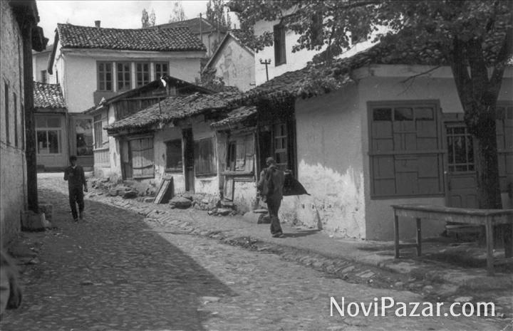
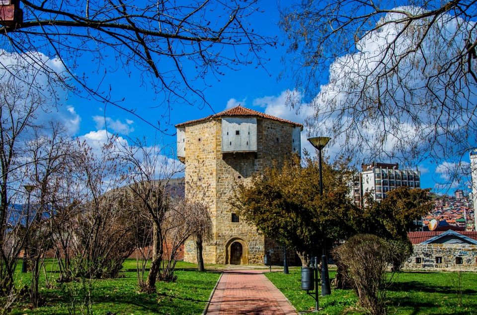
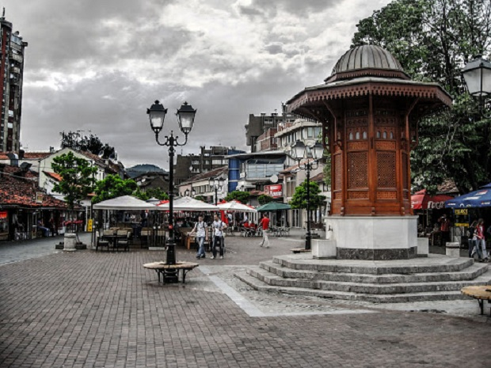
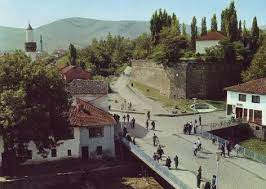

Naš izbor će vam pokazati sve o spomenicima starim i do deset vekova, a
vodiće vas i kroz novoizgrađene znamenitosti i atrakcije. Tako ćete na
najbolji način doživeti Novi Pazar i otkriti kakva atmosfera u njemu
vlada.

Nekada centar Novog Pazara,i prve zanatske radnje u nasem gradu.

Ukoliko odlučite da uskoro posetite ovu značajnu građevinu, znajte da
ćete je zatići samo delimično očuvanu. Više nema džamije koja se
nalazila unutar tvrđave, kao ni kule kod severnog bastiona.

Sebilj u Novom Pazaru izgrađen je 2010. Predstavlja fontanu sa dvije
česme, prema projektima sarajevskog sebilja.

Bedem sa Kulom motriljom je jedan od najznačajnijih historijskih
građevinskih kompleksa u Novom Pazaru.